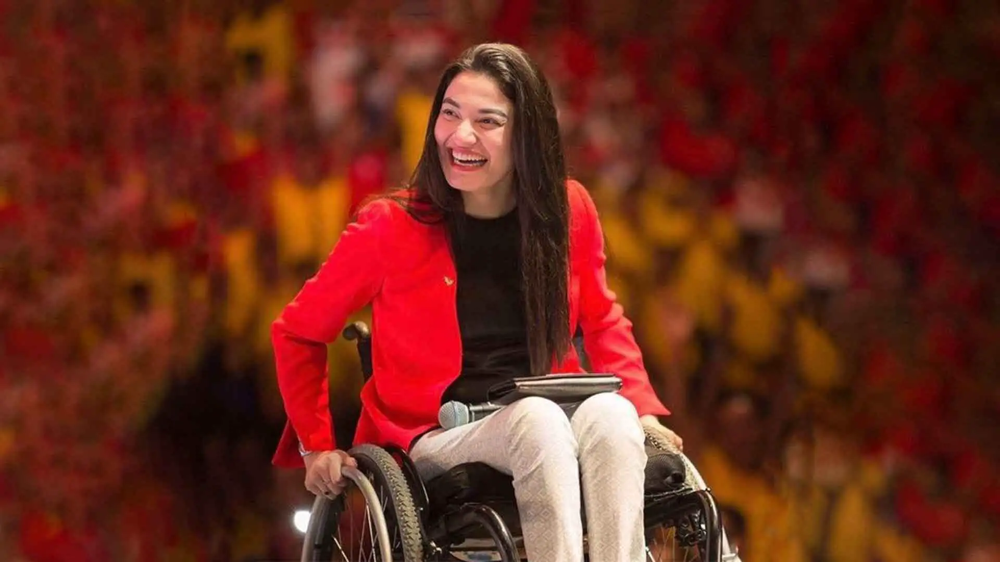
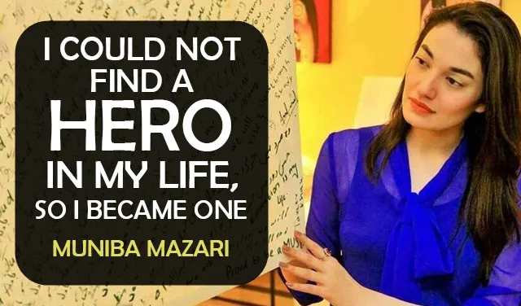
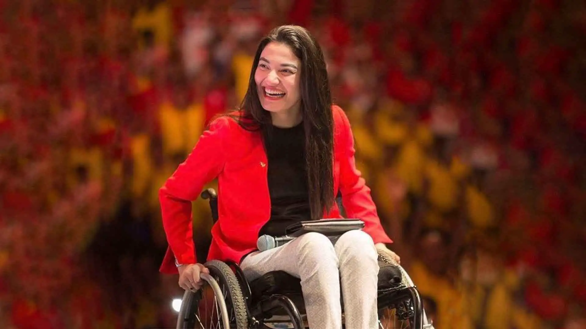
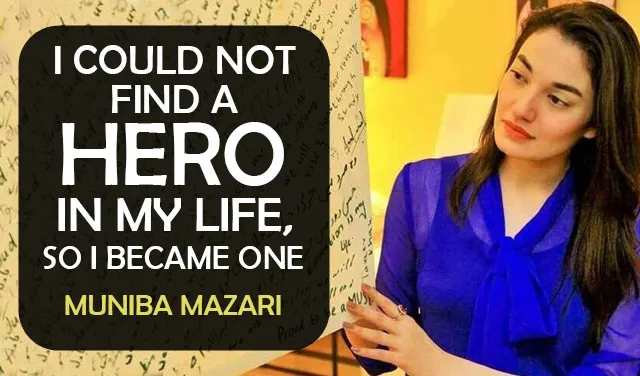

About Muniba Mazari
Click here to listen to her motivational speech.
Muniba Mazari's story is a testament to the indomitable human spirit and the power of resilience. Born on March 3, 1987, in Rahim Yar Khan, Pakistan, she led a relatively normal life until a fateful incident in 2007 changed the course of her life forever. At the age of 21, Muniba's life took a drastic turn when she met with a car accident that left her paralyzed from the waist down, confining her to a wheelchair. This tragic event could have easily shattered her spirit, but Muniba chose a different path—one of determination, creativity, and inspiration. Facing immense physical and emotional challenges, Muniba's journey to recovery was far from easy. However, she found solace and strength through various forms of self-expression, particularly art. Despite having no formal training, Muniba took up painting as a means to channel her emotions and thoughts. Her artwork quickly gained recognition for its vibrancy and depth, and it became a medium through which she could communicate her message of hope and resilience. Her paintings often feature bold, vibrant colors and themes of strength and transformation, mirroring her own journey of overcoming adversity. In addition to her artistic endeavors, Muniba Mazari became an influential motivational speaker and social activist. Her speeches are known for their emotional impact, honesty, and ability to connect with diverse audiences. Muniba shares her personal story of triumph over tragedy, urging others to find the silver lining in their own challenges. Her words resonate not only with those facing physical disabilities but with anyone struggling to find purpose and positivity in the face of adversity. Muniba's message of embracing one's limitations as stepping stones to greatness is deeply inspiring. She believes that challenges are opportunities for growth and transformation, and she encourages individuals to rewrite their narratives and redefine their identities. Her story resonates internationally, and she has spoken at various platforms, including TEDx events, conferences, and universities, where her authenticity and passion shine through. Apart from her individual accomplishments, Muniba Mazari has also been recognized on a national and international level. In 2015, she was appointed as Pakistan's first Goodwill Ambassador for UN Women. This role allowed her to advocate for gender equality and women's empowerment in a society where such issues are of paramount importance. Muniba's impact is not limited to her own country; her story has touched hearts globally, demonstrating that resilience, determination, and a positive outlook can transcend borders and inspire change. Muniba Mazari's journey continues to evolve, as she consistently uses her platform to uplift others and challenge societal norms. Her journey is a reminder that life's challenges, no matter how daunting, can be turned into opportunities for personal growth, empowerment, and positive impact. Through her art, speeches, and activism, Muniba Mazari remains a shining example of how the human spirit can rise above adversity and illuminate the world with courage, strength, and hope.